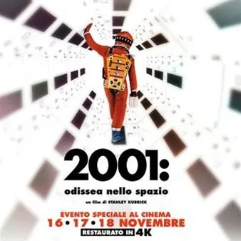

da lun 16 nov a mer 18 nov · dalle 20:15
Proiezioni speciali: “2001: Odissea nello spazio”
A quasi 60 anni dall'uscita, viene proposta la pellicola di fantascienza “2001: Odissea nello spazio” USA 1968 – 148’), nella versione restaurata in 4K con audio e immagini rinnovati per il grande schermo. In lingua originale con sottotitoli in italiano. Con: K. Dullea, G.…
 Indicazioni
Indicazioni
- Costi e prenotazioni
- Costo non indicato · Prenotazione non indicata
- Programma
- Programma da verificare. Apri la fonte ufficiale per orari e possibili aggiornamenti.
- In caso di maltempo
- Nessuna indicazione specifica pubblicata.
- Note
- Acquisito automaticamente dalla fonte.
L’EVENTO
Descrizione completa
A quasi 60 anni dall'uscita, viene proposta la pellicola di fantascienza “2001: Odissea nello spazio” USA 1968 – 148’), nella versione restaurata in 4K con audio e immagini rinnovati per il grande schermo.
In lingua originale con sottotitoli in italiano.
Con: K. Dullea, G. Lockwood, W. Sylvester
Il film restituisce la potenza immersiva voluta da Stanley Kubrick. Uscito nel 1968 e ispirato a un racconto di Arthur C. Clarke, il film esplora il legame tra uomo, tempo e tecnologia lungo milioni di anni: dalla preistoria degli ominidi trasformati dalla comparsa di un misterioso monolite, fino al 2001 e alla sfida verso Giove contro l'IA HAL 9000. Tra effetti speciali pionieristici premiati con l'Oscar e la celebre colonna sonora classica aperta da Richard Strauss, il capolavoro kubrickiano resta un'opera epica, metafisica e fondamentale per la storia del cinema.
In calendario a Gorizia:
lunedì 16 novembre
martedì 17 novembre
mercoledì 18 novembre
La proiezione inizierà tutte le sere alle ore 20.15
Per maggiori informazioni: https://www.kinemax.it/
IL PROGRAMMA
Programma e orari
Appuntamenti raccolti dalle fonti elencate. Dove manca un orario, non è ancora disponibile in questa scheda.
Programma pubblicato
- Dal 2026-11-16 al 2026-11-18
INFORMAZIONI UTILI
Prima di partire
- Controllare la fonte prima di partire.
ORGANIZZAZIONE